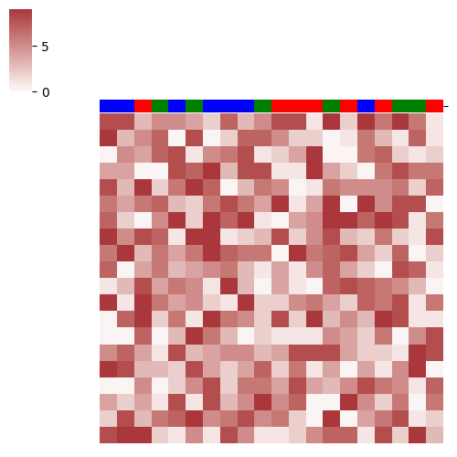

Note
Click here to download the full example code
05. sns.clustermap basic sample
Plot a matrix dataset as a hierarchically-clustered heatmap.
Note
The hierarchical clustering has been deactivated.
- 
Out:
A0 A1 A2 A3 A4 A5 A6 A7 A8 A9 A10 A11 A12 A13 A14 A15 A16 A17 A18 A19
A0 8 8 3 5 5 4 2 7 3 5 8 8 1 9 2 9 6 9 6 1
A1 9 3 5 7 0 8 0 2 7 7 5 2 2 0 1 6 3 1 7 1
A2 0 5 4 7 8 1 5 6 8 1 2 4 9 0 0 6 7 2 1 2
A3 4 4 0 0 8 7 9 3 8 8 1 1 9 4 2 0 6 8 6 6
A4 8 3 9 2 6 9 7 0 3 6 5 0 1 6 5 5 5 6 2 7
A5 6 4 6 7 3 2 6 8 6 4 9 1 4 9 0 9 5 8 8 0
A6 7 2 0 5 9 2 9 7 9 1 0 4 5 9 9 7 9 8 1 6
A7 9 5 8 7 1 9 9 1 2 3 8 2 5 8 3 2 6 2 1 8
A8 6 9 3 6 4 6 9 7 6 6 0 9 6 7 8 4 2 7 0 2
A9 7 0 4 6 3 4 5 6 3 1 4 1 5 7 4 2 0 8 7 1
A10 1 3 8 4 6 5 1 9 3 0 4 1 0 7 8 7 6 5 3 0
A11 9 1 9 6 4 5 2 1 9 2 2 5 6 4 2 7 6 8 1 6
A12 0 7 9 2 6 1 9 6 5 2 8 2 9 3 5 3 9 8 1 1
A13 0 0 7 0 3 9 6 3 0 2 1 1 1 5 4 2 6 0 5 8
A14 5 7 4 1 8 3 4 5 5 3 4 8 8 8 4 2 2 1 9 8
A15 9 8 3 3 2 8 4 2 4 7 2 6 1 4 0 4 1 5 9 0
A16 0 0 5 0 2 5 8 2 6 6 4 8 4 3 5 8 6 5 1 7
A17 4 2 4 1 8 1 8 3 5 9 5 7 0 0 9 5 2 6 0 6
A18 2 8 3 6 7 9 5 6 8 5 6 2 0 9 0 4 6 8 1 2
A19 8 9 9 2 1 5 1 8 5 1 1 2 5 7 7 1 8 2 9 3
['b', 'b', 'r', 'g', 'b', 'g', 'b', 'b', 'b', 'g', 'r', 'r', 'r', 'g', 'r', 'b', 'r', 'g', 'g', 'r']
A0 Group b
A1 Group b
A2 Group r
A3 Group g
A4 Group b
A5 Group g
A6 Group b
A7 Group b
A8 Group b
A9 Group g
A10 Group r
A11 Group r
A12 Group r
A13 Group g
A14 Group r
A15 Group b
A16 Group r
A17 Group g
A18 Group g
A19 Group r
dtype: object
11 """
12 # Display 0
13 iris = sns.load_dataset("iris")
14 species = iris.pop("species")
15 lut = dict(zip(species.unique(), "rbg"))
16 row_colors = species.map(lut)
17 """
18
19 # Libraries
20 import numpy as np
21 import pandas as pd
22 import seaborn as sns
23 import matplotlib.pyplot as plt
24
25 # Constants
26 N = 20
27 C = sns.color_palette("Spectral", n_colors=5, as_cmap=False)
28
29 # Create data
30 data = np.random.randint(low=0, high=10, size=(N, N))
31 colors = [np.random.choice(['r', 'g', 'b']) for i in range(N)]
32 series = pd.Series({'A%s'%i:'Group %s'%c for i,c in enumerate(colors)})
33
34 # Create DataFrame
35 df = pd.DataFrame(data,
36 index=['A%s'%i for i in range(N)],
37 columns=['A%s'%i for i in range(N)]
38 )
39
40 # Show
41 print(df)
42 print(colors)
43 print(series)
44
45 # Display 1
46 # ---------
47 # Create colors dictionary
48 col_colors = dict(zip(df.columns, colors))
49
50 # Show
51 g = sns.clustermap(df,
52 figsize=(5,5),
53 row_cluster=False, col_cluster=False,
54 #row_colors=col_colors,
55 col_colors=pd.Series(col_colors),
56 linewidths=0,
57 xticklabels=False, yticklabels=False,
58 center=0, cmap="vlag"
59 )
60
61 # Display 2
62 # ---------
63 # Create colors dictionary
64
65 col_colors = series.map({
66 'Group g': 'g',
67 'Group b': 'b',
68 'Group r': 'r'
69 })
70
71 # Show
72 g = sns.clustermap(df,
73 figsize=(5,5),
74 row_cluster=False, col_cluster=False,
75 #row_colors=col_colors,
76 col_colors=pd.Series(col_colors),
77 linewidths=0,
78 xticklabels=False, yticklabels=False,
79 center=0, cmap="vlag"
80 )
81
82 # Show
83 plt.show()
Total running time of the script: ( 0 minutes 0.286 seconds)